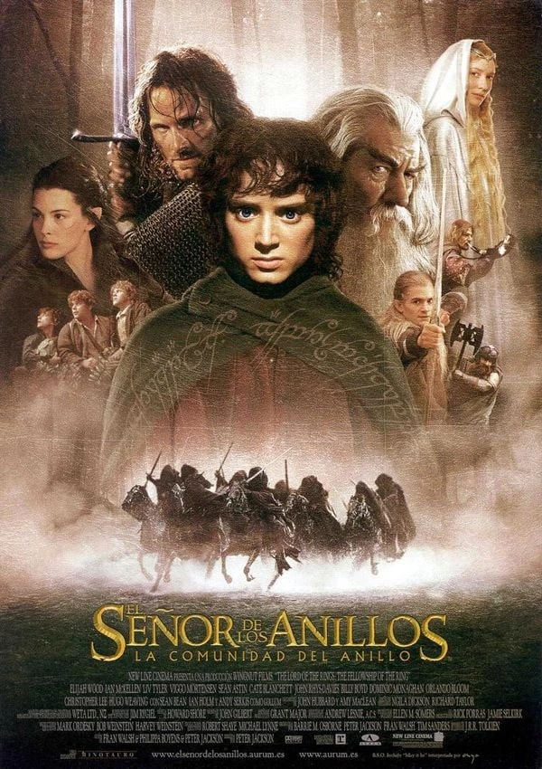

Ficha de la película
Año: 2001
Director: Peter Jackson
Novela: J.R.R. Tolkien
Duración: 180min
Saga: EL SEÑOR DE LOS ANILLOS
Reparto principal:
Elijah Wood, Ian McKellen, Viggo Mortensen, Sean Astin, Orlando Bloom, John Rhys-Davies, Dominic Monaghan, Billy Boyd, Sean Bean, Liv Tyler, Cate Blanchett, Hugo Weaving, Andy Serkis, Christopher Lee, Bernard Hill, Miranda Otto, Karl Urban, David Wenham, Brad Dourif, Ian Holm
Sinopsis
En la Tierra Media, el Señor Oscuro Sauron ordenó a los Elfos que forjaran los Grandes Anillos de Poder. Tres para los reyes Elfos, siete para los Señores Enanos, y nueve para los Hombres Mortales. Pero Saurón también forjó, en secreto, el Anillo Único, que tiene el poder de esclavizar toda la Tierra Media. Con la ayuda de sus amigos y de valientes aliados, el joven hobbit Frodo emprende un peligroso viaje con la misión de destruir el Anillo Único. Pero el malvado Sauron ordena la persecución del grupo, compuesto por Frodo y sus leales amigos hobbits, un mago, un hombre, un elfo y un enano. La misión es casi suicida pero necesaria, pues si Sauron con su ejército de orcos lograra recuperar el Anillo, sería el final de la Tierra Media.
Personajes que aparecen
Frodo Bolsón · Samwise Gamgee · Gandalf · Aragorn · Legolas · Gimli · Boromir · Merry · Pippin · Arwen · Galadriel · Elrond · Saruman · Bilbo Bolsón
Lugares importantes
La Comarca · Rivendel · Moria · Lothlórien · Amon Hen
Objetos importantes
Anillo ÚnicoEspada Dardo (Sting)Cota de malla de MithrilRedoma de GaladrielFragmentos de Narsil El Libro de MazarbulEl Cuenco de GaladrielCapas y Broches de LothlórienCuriosidades
El cambio de Aragorn a último momento: Viggo Mortensen no fue la primera opción. El actor Stuart Townsend ensayó durante cuatro semanas, pero justo antes de empezar a rodar, Peter Jackson decidió que era demasiado joven para el papel y lo reemplazó por Mortensen, quien aceptó el rol convencido por su hijo Henry (fan de los libros).
El grito real de Gandalf: Cuando Gandalf entra a la casa de Bilbo en La Comarca y se golpea fuertemente la cabeza contra una viga de madera, no estaba en el guión. Ian McKellen se golpeó por accidente, pero continuó la escena con profesionalismo y a Peter Jackson le gustó tanto el momento que lo dejó en el montaje final.
Fobia a los helicópteros: Sean Bean (Boromir) le tiene pánico a volar. Para filmar las escenas de montaña en Nueva Zelanda, mientras el resto del elenco viajaba en helicóptero, él subía caminando vestido como Boromir durante casi dos horas todas las mañanas.
El tatuaje del grupo: Ocho de los nueve miembros de la Comunidad del Anillo (Elijah Wood, Ian McKellen, Viggo Mortensen, Sean Astin, Orlando Bloom, Dominic Monaghan, Billy Boyd y Sean Bean) se tatuaron la palabra "nueve" en el idioma élfico Quenya. John Rhys-Davies (Gimli) prefirió no hacérselo y envió a su doble de riesgo en su lugar.
Lesiones en el set: Orlando Bloom (Legolas) se rompió varias costillas al caerse de un caballo. Por su parte, Sean Astin (Sam) se clavó un trozo de vidrio en el pie al adentrarse en el agua para seguir a Frodo en la escena final de la película, requiriendo atención médica inmediata.
Lesión al gritar: Christopher Lee (Saruman) fue el único integrante del reparto que conoció en persona a J.R.R. Tolkien. Además, era un apasionado seguidor de la obra y releía los libros todos los años.
Efectos visuales sin CGI: Para lograr la diferencia de tamaño entre hobbits, humanos y elfos, se utilizó en su mayoría una técnica llamada perspectiva forzada, construyendo escenarios con muebles asimétricos y usando dobles de riesgo de baja o alta estatura.